승강기산업기사 (2017-03-05 기출문제)
1과목: 승강기개론
1. 승객용 엘리베이터의 주로프 및 조속기 로프의 안전율을 옳게 표시한 것은?
- 주로프: 8, 조속기 로프: 4
- 주로프: 8, 조속기 로프: 3
- 주로프: 10, 조속기 로프: 3
- 주로프: 12, 조속기 로프: 8
(정답률: 94%)

2. 비상용 엘리베이터는 소방관이 조작하여 엘리베이터 문이 닫힌 이후부터 몇 초 이내에 가장 먼 층에 도착하여야 하는가?
- 50
- 60
- 90
- 120
(정답률: 89%)
3. 전기식 엘리베이터의 구성에 속하지 않는 것은?
- 균형추
- 권상기
- 파워유니트
- 조속기로프
(정답률: 92%)
4. 비상용 엘리베이터에 관한 설명으로 틀린 것은?
- 운행속도는 1m/s 이상이어야 한다.
- 비상용 엘리베이터는 소방운전 시 모든 승강장의 출입구에 정지할 수 없다.
- 엘리베이터 및 조명의 전원공급시스템은 주 전원공급장치 및 보조(비상, 대기 또는 대체) 전원공급장치로 구성되어야 한다.
- 소방운전 스위치의 조작위치는 쌍안정이어야 하고 ‘1’과 ‘0’이 되도록 명확하게 표시되어야 하며 ‘1’의 위치에서 소방운전이 시작된다.
(정답률: 82%)
5. 3상 교류의 단속도 모터에 전원을 투입함으로써 기동과 정속운전을 하고, 정지는 전원을 끈 후 기계적으로 브레이크를 거는 방식은?
- 교류 궤환제어
- 교류 2단 속도제어
- 교류 3단 속도제어
- 교류 일단 속도제어
(정답률: 70%)
6. 수직형 휠체어리프트에 적용되는 기준으로 틀린 것은?
- 지정된 층 사이를 운행
- 정격하중은 300kg 이하
- 주행로의 경사도는 수직에 대해 15° 이하
- 밀폐식 승강로에 설치된 경우 행정은 4m 이하
(정답률: 68%)
7. 유압식 엘리베이터에서 주로프의 직경은 일반적으로 몇 mm 이상이어야 하는가?
- 8
- 10
- 12
- 14
(정답률: 63%)
8. 기계실의 바닥면부터 천장까지의 수직거리는 특별한 경우를 제외하고 최소 몇 m 이상으로 하여야 하는가?(관련 규정 개정전 문제로 여기서는 기존 정답인 3번을 누르면 정답 처리됩니다. 자세한 내용은 해설을 참고하세요.)
- 1.2
- 1.5
- 2
- 2.5
(정답률: 89%)
9. 권상도르래, 풀리 또는 드럼과 현수로프의 공칭 직경사이의 비는 스트랜드의 수와 관계없이 얼마 이상이어야 하는가?
- 25
- 30
- 40
- 45
(정답률: 83%)
10. 전기식 엘리베이터에서 권상식 구동방식에 대한 설명으로 옳은 것은?
- 로프를 드럼에 감아 오르내리도록 하는 것이다.
- 스크류식으로 카의 운동을 일으키는 것이다.
- 유압에 의하여 카의 운동을 일으키는 것이다.
- 로프와 도르래의 마찰력을 이용하여 카를 움직이는 것이다.
(정답률: 80%)
11. 완충기에 대한 설명으로 틀린 것은?
- 엘리베이터에는 카 및 균형추의 주행로 하부 끝에 완충기가 설치되어야 한다.
- 에너지 분산형 완충기는 엘리베이터 정격속도와 상관없이 어떤 경우에도 사용될 수 있다.
- 선형 또는 비선형 특성을 갖는 에너지 축적형 완충기는 엘리베이터의 정격속도가 1m/s 이하인 경우에만 사용되어야 한다.
- 완충된 복귀 움직임을 갖는 에너지 축적형 완충기는 엘리베이터의 정격속도가 1.5m/s 이하인 경우에만 사용되어야 한다.
(정답률: 62%)
12. 가공이 쉽고 초기 마찰력이 우수하며 쐐기작용에 의해 마찰력은 크지만 면압이 높고 권상로프와 접하는 부분의 각도가 작게 되어 트렉션 비의 값이 작아지게 되는 단점을 갖는 로프의 홈은?
- U홈
- V홈
- M홈
- 언더컷 홈
(정답률: 83%)
13. 엘리베이터에서 카 천장에 설치된 비상구출문에 관한 내용으로 옳은 것은?
- 카 천장에 설치된 비상구출문은 카 외부 방향으로 열리지 않아야 한다.
- 카 천장에 설치된 비상구출구의 크기는 0.3m×0.5m 이상이어야 한다.
- 카 천장에 설치된 비상구출문은 카 내부에서 쉽게 열릴 수 있어야 한다.
- 카 천장에 설치된 비상구출문은 카 외부에서 손으로 쉽게 열릴 수 있어야 한다.
(정답률: 74%)
14. 유압식 엘리베이터의 밸브에 관한 설명 중 틀린 것은?
- 체크밸브는 펌프와 차단밸브 사이의 회로에 설치되어야 한다.
- 차단밸브는 엘리베이터 구동기의 다른 밸브와 가까이 위치되어야 한다.
- 압력 릴리프 밸브는 압력을 전 부하 압력의 125%까지 제한하도록 맞추어 조절되어야 한다.
- 하강밸브는 전기적으로 개회로 상태로 유지되어야 하며, 잭에서 발생하는 유압 및 밸브 당 1개 이상의 안내된 압축 스프링에 의해 닫혀야 한다.
(정답률: 81%)
15. 승강장의 도어 인터록의 설정 방법으로 옳은 것은?
- 잠김 후 스위치가 작동하도록 한다.
- 잠김 전에 스위치가 작동하도록 한다.
- 잠김과 스위치가 동시에 작동하도록 한다.
- 잠김만 확실하면 되고, 스위치 작동여부는 관계가 없다.
(정답률: 83%)
16. 균형체인의 설치 목적으로 가장 옳은 것은?
- 카의 소음진동을 방지하기 위해서
- 균형추의 무게를 보상하기 위해서
- 카 안의 승객 무게를 보상하기 위해서
- 와이어로프의 무게를 보상하기 위해서
(정답률: 76%)
17. 높이가 6m 이하이고 공칭속도가 0.5m/s 이하인 경우에는 에스컬레이터의 경사도를 몇 도까지 증가시킬 수 있는가?
- 6°
- 12°
- 30°
- 35°
(정답률: 72%)
18. 카에서 현수로프가 끊어지더라도 조속기 작동속도에서 하강방향으로 작동하여 가이드 레일을 잡아 정격하중의 카를 정지시킬 수 있는 장치는 무엇인가?
- 조속기
- 완충기
- 브레이크
- 비상정지장치
(정답률: 78%)
19. 다음 중 균형추측에도 비상정지장치를 설치하여야 하는 경우는?
- 적재하중이 1000kgf 이상인 경우
- 승강기의 속도가 90m/min 이상인 경우
- 정지 층수가 16층 이상인 비상호기의 경우
- 승강로의 피트 바닥 하부를 거실 또는 여러 사람이 출입하는 통로 등으로 사용하는 경우
(정답률: 90%)
20. 도어시스템의 종류를 분류할 때 문자 “S"는 무엇을 나타내는가?
- 문의 형태
- 문의 재질
- 문의 용도
- 문의 가로열기
(정답률: 88%)
2과목: 승강기설계
21. 기어드 권상기에 적용되는 웜기어의 특징이 아닌 것은?
- 효율이 낮다.
- 감속비가 작다.
- 역전방지를 할 수 있다.
- 헬리컬 기어에 비해 소음이 작다.
(정답률: 54%)
22. 전기식 엘리베이터에서 권상 구동식 엘리베이터의 상부틈새에 대한 설명 중 틀린 것은?
- 균형추가 완전히 압축된 완충기 위에 있을 때 카 가이드 레일의 길이는 0.1 + 0.035v2m 이상 연장되어야 한다.
- 균형추가 완전히 압축된 완충기 위에 있을 때 카 위에는 0.4m × 0.5m × 0.8m 이상의 장방형 블록을 수용할 수 있는 충분한 공간이 있어야 한다.
- 균형추가 완전히 압축된 완충기 위에 있을 때, 균형추 가이드 레일의 길이는 0.1 + 0.035v2m 이상 연장되어야 한다.
- 균형추가 완전히 압축된 완충기 위에 있을 때 승강로 천장의 가장 낮은 부분과 가이드 슈 도는 롤러, 로프 연결부 및 수직 개폐식 문의 헤어 또는 부품의 가장 높은 부분(있는 경우) 사이의 수직거리는 0.1 + 0.035v2m 이상이어야 한다.
(정답률: 56%)
23. 수평 개폐식 승강장문의 조립체가 유효 출입구 면적의 50% 이상이 유리로 된 경우 몇 J의 운동에너지로 충격을 가했을 때 승강장문의 이탈 없이 견뎌야 하는가?
- 228
- 308
- 450
- 480
(정답률: 54%)
24. 그림과 같은 보의 지점 RA, RB의 반력은?
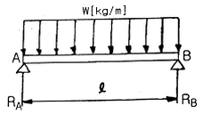
- Wℓ=RA=RB
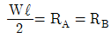
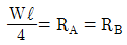
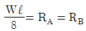
(정답률: 62%)
25. 유압식 엘리베이터에서 실린더 하부에 설치되는 밸브는?
- 체크밸브
- 스톱밸브
- 럽쳐밸브
- 릴리프밸브
(정답률: 62%)
26. 카 바닥과 카 틀의 부재에 작용하는 하중의 종류로 틀린 것은?
- 카 바닥 - 굽힘력
- 상부체대 - 굽힘력
- 하부체대 - 전단력
- 카 주 - 굽힘력, 장력
(정답률: 65%)
27. 엘리베이터용 T형 가이드레일의 표준길이는 약 몇 m 인가?
- 3
- 5
- 7
- 10
(정답률: 87%)
28. 카 레일용 브래킷에 관한 설명으로 틀린 것은?
- 벽면으로부터 1000mm 이하로 설치하여야 한다.
- 구조 및 형태는 레일을 지지하기에 견고하여야 한다.
- 사다리형 브래킷의 경사부 각도는 15~30도로 제작한다.
- 콘크리트에 대하여는 앵커볼트로 견고히 부착하여야 한다.
(정답률: 79%)
29. 권상기에 대한 설명으로 옳은 것은?
- 권상기 도르래와 로프의 권부각이 클수록 미끄러지기 쉽다.
- 권상기 도르래의 지름은 로프 지름의 20배 이상으로 하여야 한다.
- 도드래의 로프홈은 U홈을 사용하는 것이 마찰계수가 커서 유리하다.
- 승객용 엘리베이터의 브레이크장치는 정격하중의 125% 하중에서 하강 시 안전하게 감속·정지하여야 한다.
(정답률: 79%)
30. 정격속도가 1m/s를 초과하는 엘리베이터에 사용되는 점차 작동형 비상정지장치의 작동을 위한 조속기는 정격속도의 115% 이상의 속도 그리고 몇 m/s 미만에서 작동되어야 하는가? (딴, V는 엘리베이터의 정격속도(m/s)이다.)
- 1.3V
- 1.4V
- 12.5V + 0.25/V
- 1.25v + 0.75/V
(정답률: 55%)
31. 승객수 20명의 일주시간이 25초일 경우 엘리베이터 1대당 5분간 수송능력은?
- 200명
- 210명
- 220명
- 240명
(정답률: 78%)
32. 엘리베이터 제어방식 중 교류귀한 제어방식을 사용하는 이유로 옳은 것은?
- 점호각을 제어하기 위하여
- 병렬운전을 제어하기 위하여
- 정류개선을 제어하기 위하여
- 전동기 속도를 제어하기 위하여
(정답률: 65%)
33. 엘리베이터용 전동기의 용량 결정과 관계가 없는 것은?
- 정격속도
- 정격하중
- 로핑방식
- 주행거리
(정답률: 64%)
34. 다음 ( ) 안에 들어갈 말로 옳은 것은?
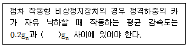
- 0.5
- 0.7
- 0.9
- 1
(정답률: 80%)
35. 레일의 적용 시 고려할 사항이 아닌 것은?
- 좌굴하중
- 수평진동력
- 수직진동력
- 회전모멘트
(정답률: 57%)
36. 대용량의 저속 화물용 엘리베이터에 적용되는 3:1 또는 4:1 로핑(roping)방식의 결점으로 틀린 것은?
- 로프의 수명이 짧아진다.
- 총합효율이 매우 저하된다.
- 1본의 로프 길이가 매우 길게 된다.
- 로프의 수명은 1:1 방식과 차이가 없다.
(정답률: 84%)
37. 정격속도 1m/s를 초과하여 운행 중인 엘리베이터 카 문을 개방하기 위해 필요한 힘은 몇 N 이상이어야 하는가? (단, 잠금해제구간에서는 제외한다.)
- 30
- 50
- 75
- 100
(정답률: 77%)
38. 균형추를 적용하는 권상식 엘리베이터에서 승강기의 정격하중 L(kg), 정격속도 60m/min, 오버밸런스율 0.5, 권상기 효율 0.5일 때, 전동기의 용량 P는 약 몇 kW인가? (단, 다른 조건은 무시한다.)
- P = 0.01 ㅣL
- P = 0.02ㅣL
- P = 0.03ㅣL
- P = 0.04ㅣL
(정답률: 50%)
39. 정격전류가 다른 여러 대의 엘리베이터에 대한 변압기의 용량을 산정하는 방법으로 옳은 것은?
- 정격전류별로 변압기 용량을 산정한 후 가장 낮은 값으로 한다.
- 정격전류별로 변압기 용량을 산정한 후 가장 높은 값으로 한다.
- 정격전류별로 변압기 용량을 산정한 후 그 값을 모두 더한 값으로 한다.
- 정격전류별로 변압기 용량을 산정한 후 그 값을 모두 더하여 엘리베이터 대수로 나눈 값으로 한다.
(정답률: 65%)
40. 4대의 엘리베이터가 그룹으로 설치된 건물에서 평균 왕복주행시간이 120초일 경우 승객의 평균 대기시간은 몇 초인가?(오류 신고가 접수된 문제입니다. 반드시 정답과 해설을 확인하시기 바랍니다.)
- 10
- 15
- 20
- 30
(정답률: 30%)
3과목: 일반기계공학
41. 원심 펌프에서 송출압력 0.2N/mm2, 흡입 진공압력 0.⑤N/mm2, 압력계와 진공계 사이의 높이차 600mm일 때, 펌프의 전양정(m)은? (단, 흡입관과 송출관의 지름은 같다.)
- 16.5
- 26.1
- 30.6
- 36.3
(정답률: 37%)
42. 비교측정의 표준이 되는 게이지는?
- 한계 게이지
- 센터 게이지
- 게이지 블록
- 마이크로 미터
(정답률: 66%)
43. 속이 빈 모양의 목형을 주형 내부에서 지지할 수 있도록 목형에 덧붙여 만든 돌출부는?
- 라운딩(rounding)
- 코어 프린트(core print)
- 목형 기울기(draft taper)
- 보정 여유(compensation allowance)
(정답률: 73%)
44. 비틀림모멘트(T)와 휨모멘트(M)를 동시에 받는 재료의 상당 비틀림모멘트(Te)는?
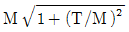
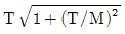
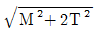
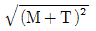
(정답률: 62%)
45. 다음 중 기어의 언더컷이 발생하는 원인으로 옳은 것은?
- 잇수가 많을 때
- 이 끝이 둥글 때
- 잇수비가 아주 클 때
- 이 끝 높이가 낮을 때
(정답률: 69%)
46. 하중 30kN을 지지하는 훅 볼트의 미터나사 크기로 적절한 것은? (단, 나사재질의 허용응력은 60MPa이고, 나사의 골지름(d1)은 ‘d1=0.8×바깥지름’이다.)
- M20
- M24
- M28
- M32
(정답률: 54%)
47. 용접봉 피복제의 역할이 아닌 것은?
- 아크를 안정시킨다.
- 용착 금속의 급냉을 방지한다.
- 용착 금속의 탈산·정련작용을 한다.
- 용융점이 높은 슬래그를 많이 만든다.
(정답률: 70%)
48. 회주철의 일반적인 탄소 함량은?
- 2 ~ 4%
- 1 ~ 1.5%
- 1.5% ~ 2%
- 3.0 ~ 3.6%
(정답률: 56%)
49. 선반작업에서 공작물의 지름 D(mm), 1분간의 회전수 N(r/min)일 때, 절삭속도 V(m/min)는?
- V = πDN
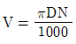
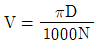
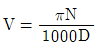
(정답률: 76%)
50. 충격응력에 대한 설명으로 옳은 것은?
- 체적에 비례한다.
- 재료의 탄성계수에 반비례한다.
- 운동에너지를 증가시킴으로써 응력이 감소한다.
- 단면적이나 길이를 증가시킴으로써 응력이 감소한다.
(정답률: 49%)
51. 안장시험에 나타난 각 점 중 훅의 법칙(Hooke's law)이 적용되는 범위는?
- 비례한도
- 극한강도
- 파단점
- 항복점
(정답률: 52%)
52. 2개의 너트를 사용하여 충분히 죈 후 안쪽의 너트를 풀어 너트의 풀림을 방지하는 방법은?
- 2줄 나사에 의한 방법
- 로크 너트에 의한 방법
- 멈춤 나사에 의한 방법
- 자동 죔 너트에 의한 방법
(정답률: 71%)
53. 그림과 같은 외팔보에 2kN의 집중하중이 작용 할 때, 지지점 A에서의 굽힘응력은 약 몇 MPa인가? (단, 길이 50cm, 8.5cm×8.5cm)
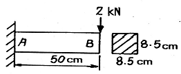
- 2.44
- 4.88
- 9.77
- 19.54
(정답률: 44%)
54. 저널과 베어링이 직접 미끄럼에 의해 접촉을 하는 베어링은?
- 슬라이딩 베어링
- 롤러 베어링
- 니들 베어링
- 볼 베어링
(정답률: 69%)
55. 유압의 특성에 대한 설명으로 틀린 것은?
- 과부하에 대한 아전장치가 필요하다.
- 작은 힘으로 큰 출력을 얻을 수 있다.
- 열 발생에 대한 냉각장치가 필요없다.
- 힘과 속도를 자유롭게 변속시킬 수 있다.
(정답률: 74%)
56. 그림의 단식블록 브레이크에서 브레이크에 가해지는 힘(F)은? (단, W는 브레이크 드럼과 브레이크 블록 사이에 작용하는 힘, μ는 마찰계수, f는 마찰력이다.)
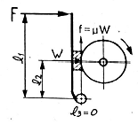
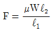
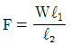
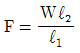
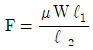
(정답률: 47%)
57. 다음의 특징을 갖는 금속은?
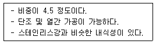
- 니켈(Ni)
- 구리(Cu)
- 아연(Zn)
- 티탄(Ti)
(정답률: 61%)
58. 압출가공에 관한 설명으로 틀린 것은?
- 속이 빈 용기의 생산에는 충격압출이 적합하다.
- 납 파이프나 건전지 케이스의 생산에 적합하다.
- 단면의 형태가 다양한 직선과 곡선 제품의 생산이 가능하다.
- 압출에 의한 표면결함은 소재온도와 가공속도를 늦춤으로써 방지할 수 있다.
(정답률: 61%)
59. 강의 표면에 알루미늄(Al)을 침투시켜 내식성을 증가시키는 침투법은?
- 크로마이징(Chromizing)
- 칼로라이징(Calorizing)
- 보론나이징(Boronizing)
- 실리콘나이징(Siliconizing)
(정답률: 75%)
60. 압력제어밸브가 아닌 것은?
- 교축 밸브
- 감압 밸브
- 릴리프 밸브
- 무부하 밸브
(정답률: 57%)
4과목: 전기제어공학
61. 변압기 내부 고장 검출용 보호계전기는?
- 차동계전기
- 과전류계전기
- 역상계전기
- 부족전압계전기
(정답률: 58%)
62. 피측정단자에 그림과 같이 결선하여 전압계로 e(V)라는 전압을 얻었을 때 피측정단자의 절연저항은 몇 MΩ 인가? (단, Rm : 전압계 내부저항(Ω), V : 시험전압(V)이다.)
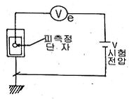
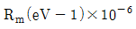
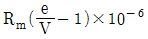
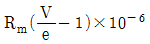
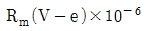
(정답률: 55%)
63. 임피던스 강하가 4%인 어느 변압기가 운전 중 단락되었다면 그 단락전류는 정격전류의 몇 배가 되는가?
- 10
- 20
- 25
- 30
(정답률: 51%)
64. 되먹임 제어계에서 ⓐ부분에 해당하는 것은?
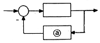
- 조절부
- 조작부
- 검출부
- 목표값
(정답률: 75%)
65. 되먹임 제어를 옳게 설명한 것은?
- 입력과 출력을 비교하여 정정동작을 하는 방식
- 프로그램의 순서대로 순차적으로 제어하는 방식
- 외부에서 명령을 입력하는데 따라 제어되는 방식
- 미리 정해진 순서에 따라 순차적으로 제어되는 방식
(정답률: 73%)
66. 교류에서 실효값과 최대값의 관계는?
- 실효값 = 최대값/√2
- 실효값 = 최대값/√3
- 실효값 = 최대값/2
- 실효값 = 최대값/3
(정답률: 62%)
67. 직류전동기의 속도제어법으로 틀린 것은?
- 저항제어
- 계자제어
- 전압제어
- 주파수제어
(정답률: 70%)
68. 프로세스 제어나 자동 조정 등 목표값이 시간에 대하여 변화하지 않는 제어를 무엇이라 하는가?
- 추종제어
- 비율제어
- 정치제어
- 프로그램제어
(정답률: 58%)
69. 배리스터(Varistor)란?
- 비직선적인 전압-전류 특성을 갖는 2단자 반도체소자이다.
- 비직선적인 전압-전류 특성을 갖는 3단자 반도체소자이다.
- 비직선적인 전압-전류 특성을 갖는 4단자 반도체소자이다.
- 비직선적인 전압-전류 특성을 갖는 리액턴스 소자이다.
(정답률: 49%)
70. 콘덴서만의 회로에서 전압과 전류 사이의 위상관계는?
- 전압이 전류보다 90도 앞선다.
- 전압이 전류보다 90도 뒤진다.
- 전압이 전류보다 180도 앞선다.
- 전압이 전류보다 180도 뒤진다.
(정답률: 63%)
71. 다음 중 다른 값을 나타내는 논리식은?
- XY+Y
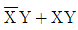
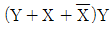
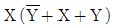
(정답률: 51%)
72. 그림과 같은 블록선도와 등가인 것은?
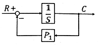
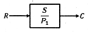
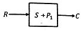
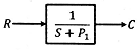
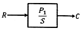
(정답률: 68%)
73. 그림과 같은 블록선도에서 전달함수 C/R는?
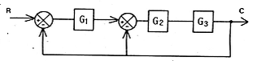
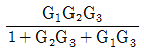
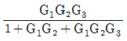
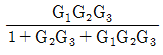
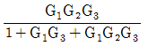
(정답률: 66%)
74. 보드선도의 위상여유가 45°인 제어계의 계통은?
- 안전하다.
- 불안정하다.
- 무조건 불안정하다.
- 조건에 따른 안정을 유지한다.
(정답률: 58%)
75. 잔류 편차(off-set)를 발생하는 제어는?
- 미분 제어
- 적분 제어
- 비례 제어
- 비례 적분 미분 제어
(정답률: 66%)
76. 50Ω의 저항 4개를 이용하여 가장 큰 합성저항을 얻으면 몇 Ω 인가?
- 75
- 150
- 200
- 400
(정답률: 80%)
77. 직류발전기 전기자 반작용의 영향이 아닌 것은?
- 절연내력의 저하
- 자속의 크기 감소
- 유기기전력의 감소
- 자기 중성축의 이동
(정답률: 46%)
78. 온도에 따라 저항값이 변화하는 것은?
- 서미스터
- 노즐플래퍼
- 앰플리다인
- 트랜지스터
(정답률: 77%)
79. 그림과 같은 그래프에 해당하는 함수를 라플라스 변환하면?
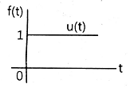
- 1
- 1/s
- 1/s+1
- 1/s2
(정답률: 43%)
80.
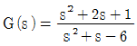
인 특성방정식의 근은?- -1
- -3, 2
- -1, -3
- -1, -3, 2
(정답률: 62%)
승객용 엘리베이터의 주로프는 엘리베이터의 무게를 지탱하는 중요한 부품 중 하나입니다. 따라서 주로프의 안전율은 높을수록 좋습니다. 반면에 조속기 로프는 엘리베이터가 급격한 정지를 할 때 사용되는 부품으로, 안전율이 높을수록 엘리베이터의 정지가 부드러워집니다.
따라서 주로프의 안전율이 높고, 조속기 로프의 안전율도 적절히 높은 "주로프: 12, 조속기 로프: 8"이 가장 적절한 답입니다.